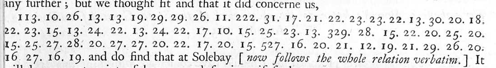
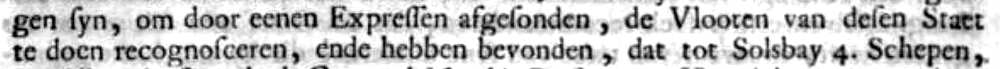
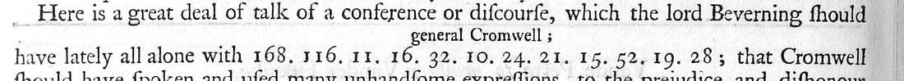

- Document
- Thurloe, State Papers, vol. 1 (1742), p. 435: Beverningk and Van de Perre, deputies of the States General in England, to Willem Boreel, the Dutch ambassador in France, Westminster, 22 August / 1 September 1653. Cromwell's government intercepted the letter; the print gives an English translation and leaves the cipher in numbers.
- New
- The link between the two printed books, and the key of the cipher. We found no earlier reconstruction of it. New and small: a reading of 12 cipher groups in Boreel's letter of 13 September 1653.
- Reproduced
- The text of the letter of 1 September 1653. The Dutch minute of this letter is in print: Verbael gehouden door de Heeren H. van Beverningk ... (1725), pp. 97-99, No. 6.
The key
- A ring of 24 numbers, 10 to 33, in this order: 32 30 28 26 24 22 20 18 16 14 12 10 11 13 15 17 19 21 23 25 27 29 31 33. Even numbers go down, odd numbers go up.
- 24 letters follow the ring: a b c d e f g h i k l m n o p q r s t v w x y z (i = j, v = u).
- An indicator digit, 1 to 5, sets the letter a on that place of the ring.
- A group of three digits is the indicator and the first letter: 222 is alphabet 2 and the number 22, which is e. The groups of two digits that follow stay in that alphabet until the next group of three digits.
| Indicator | a | b | c | d | e | f | g | h | i | k | l | m | n | o | p | q | r | s | t | v | w | x | y | z |
|---|---|---|---|---|---|---|---|---|---|---|---|---|---|---|---|---|---|---|---|---|---|---|---|---|
| 1 | 32 | 30 | 28 | 26 | 24 | 22 | 20 | 18 | 16 | 14 | 12 | 10 | 11 | 13 | 15 | 17 | 19 | 21 | 23 | 25 | 27 | 29 | 31 | 33 |
| 2 | 30 | 28 | 26 | 24 | 22 | 20 | 18 | 16 | 14 | 12 | 10 | 11 | 13 | 15 | 17 | 19 | 21 | 23 | 25 | 27 | 29 | 31 | 33 | 32 |
| 3 | 28 | 26 | 24 | 22 | 20 | 18 | 16 | 14 | 12 | 10 | 11 | 13 | 15 | 17 | 19 | 21 | 23 | 25 | 27 | 29 | 31 | 33 | 32 | 30 |
| 4 | 26 | 24 | 22 | 20 | 18 | 16 | 14 | 12 | 10 | 11 | 13 | 15 | 17 | 19 | 21 | 23 | 25 | 27 | 29 | 31 | 33 | 32 | 30 | 28 |
| 5 | 24 | 22 | 20 | 18 | 16 | 14 | 12 | 10 | 11 | 13 | 15 | 17 | 19 | 21 | 23 | 25 | 27 | 29 | 31 | 33 | 32 | 30 | 28 | 26 |
The whole table is 5 × 24 = 120 values from this one rule. A number in grey italics is predicted by the ring only: neither letter shows it. Alphabet 4 is not used in either letter. There are no nulls and no syllables. Numbers above 100 that are not indicators are words of an older general code.
The table as a file: key.tsv. The rule as a script: model.py.
Worked example
The first cipher run of the letter of 1 September 1653


Each box holds one group: the group as printed (the indicator digit is bold), the letter that the ring gives, and the letter of the Dutch minute at that place. A red box is a conflict.
[maer wy hebben ons laeten gelegen syn,] om door eenen Expressen afgesonden, de Vlooten van desen Staet te doen recognosceeren
[but we made it our business] to have the fleets of this State reconnoitred by a man sent on purpose (our translation of the minute; Thurloe has no English for the cipher).
64 of the 70 groups give the letter of the minute. The six conflicts: 29 29 26 give "xxd" where the minute has "eene"; 17 gives p for the V of "Vlooten", and 23 gives s for its e; 26 gives one z too many in "recognosceeren". The print probably has wrong digits there: in a letter with a known key the same edition prints 12 wrong groups in 207.
Boreel to the deputies, 13 September 1653 (Thurloe i.454)

The print: "a conference or discourse, which the lord Beverning should have lately all alone with 168. 116. 11. 16. 32. 10. 24. 21. 15. 52. 19. 28". Above 168 the print has the gloss "general Cromwell". No Dutch text of this letter is known; the ring alone gives the letters.
[Cromwell] IN IAMES P?RC
in James parc (St James's Park). The group 52 is not in the ring; with 32 (a) the word is "parc". The deputies' printed reply names the "Conferentie in St. James Parck" (Verbael, p. 111), so the fact itself is known.
How sure
| Measure | Value |
|---|---|
| Groups of the letter of 1 September, all checked on the page image of the 1742 edition | 136 |
| Groups that fit the minute | 124, and 2 more if "6" is a misprint of "16" |
| Spelling differences between the letter and the minute | 3 |
| Conflicts | 6 |
| Open | 1 (the group 117, probably a code word) |
| Alphabets 1 and 3 predicted from alphabets 2 and 5 | 41 of 43 groups right |
| Best of 5,000 random rings, with a free shift for each alphabet | 60 of 131 groups; the ring above gives 127 |
Outside check. The printed Verbael of the embassy. Its first sentence agrees word for word with the clear text in Thurloe, and its minute gives the letters of all three cipher runs. The alignment of the runs with the minute gave two alphabets; the ring and the indicator rule came from their structure; the other two alphabets were then predicted and tested.
What is not resolved
- Three groups that give "xxd" where the minute has "eene". No shift explains them.
- The code group 117.
- The manuscript of the intercepted letter (Bodleian, Rawlinson A) was not seen. It can settle the printed groups that conflict.
- The letters to De Witt in the same volume use another cipher. R. Fruin printed its key in 1906; it is not ours.
All 136 groups against the minute: alignment.tsv. Our transcription of the minute: verbael_no6.txt. Folder: dutch-1653.